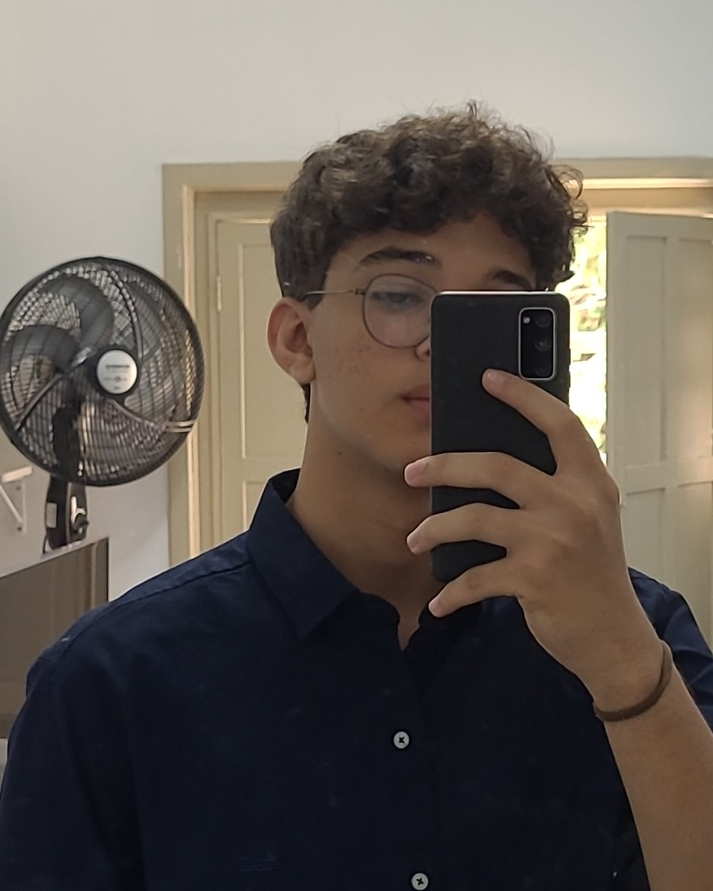

Core Curriculum
Vitor Santana e Albuquerque
Desenvolvedor
Salvador-BA
(71) 99614-4188
vitor.s.albq@gmail.com
02/07/2004
Objetivo
Desenvolver competências no mercado de trabalho; aprimorar habilidades inatas por meio do trabalho e desenvolver minha proficiência no setor de tecnologia com o objetivo de me tornar desenvolvedor.
Experiência
Qualítas Tecnologias Educacionais
Estagiário | NOVEMBRO 2022 - Presente
- Criação e Gerenciamento do Banco de dados da empresa.
- Construção e manutenção do site.
- Desenvolvimento de montagens e programação de montagens em Arduino e Lego para o cunho pedagógico.
- Criação de ambientes virtuais de aprendizados para escolas.
Colégio Soledade
Freelancer | ABRIL 2023 - Junho 2023
- Criação do site do colégio.
- https://portal.colegiosoledade.com.br
Colégio Nossa Senhora da Conceição
Estagiário na TI | ABRIL 2022 - DEZEMBRO 2022
- Suporte ao site referente a escola.
- Manutenção da rede e computadores.
- Configuração dos servidores.